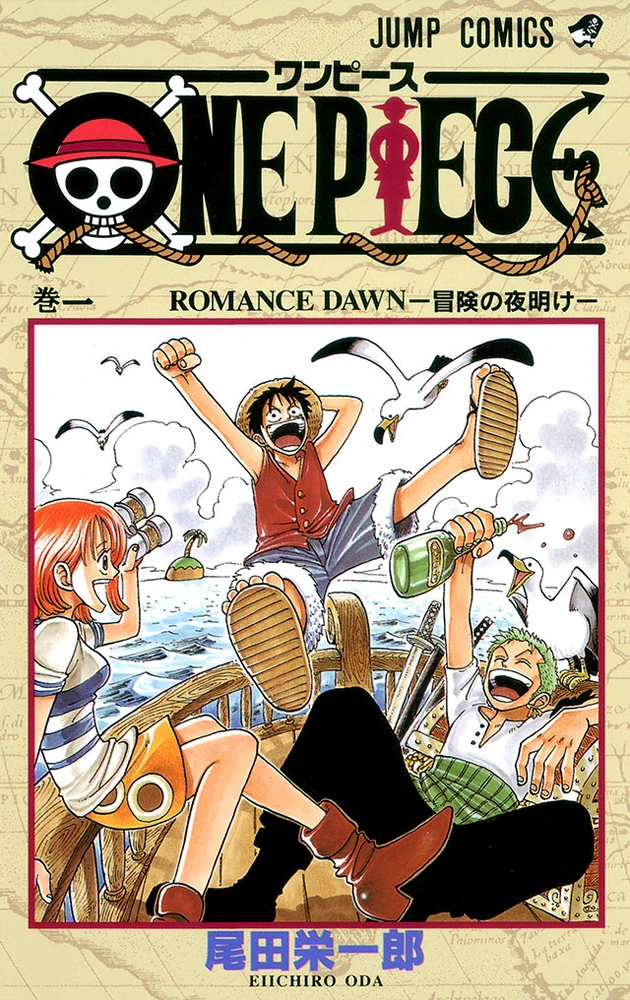

One piece
One piece
One Piece (ワンピース Wan Pīsu?) é uma série de mangá escrita e ilustrada por Eiichiro Oda. Os capítulos têm sido serializados na revista Weekly Shōnen Jump desde 22 de julho de 1997, com os capítulos compilados e publicados em 105 volumes tankōbon pela editora Shueisha até março de 2023. One Piece conta as aventuras de Monkey D. Luffy, um jovem cujo corpo ganhou as propriedades de borracha após ter comido uma fruta do diabo acidentalmente. Com sua tripulação, os Piratas do Chapéu de Palha, Luffy explora a Grand Line em busca do tesouro mais procurado do mundo, o "One Piece", a fim de se tornar o próximo Rei dos Piratas.
Enredo
A série foca em Monkey D. Luffy, um jovem feito de borracha, que, inspirado em seu ídolo de infância, o poderoso pirata Shanks, o Ruivo, parte em uma jornada do mar do East Blue para encontrar o tesouro mítico, o One Piece, e proclamar-se o Rei dos Piratas. Em um esforço para organizar sua própria tripulação, os Piratas do Chapéu de Palha, Luffy resgata e faz amizade com um caçador de piratas e espadachim chamado Roronoa Zoro, e eles partem em busca do tesouro titular. Eles são acompanhados em sua jornada por Nami, uma ladra e navegadora obcecada por dinheiro; Usopp, um franco-atirador e mentiroso compulsivo; e Sanji, um cozinheiro amoroso mas cavalheiresco. Eles adquirem um navio, o Going Merry, e se envolvem em confrontos com notórios piratas do East Blue. Enquanto Luffy e sua equipe partem em suas aventuras, outros se juntam à equipe mais tarde na série, incluindo Tony Tony Chopper, um médico de renas antropomorfizado; Nico Robin, arqueóloga e ex-assassina da Baroque Works; Franky, um construtor naval ciborgue; Brook, um músico esqueleto e espadachim; e Jimbei, um timoneiro homem-peixe e ex-membro dos Sete Corsários do Mar (em japonês: 王下七武海, transl. Ōka Shichibukai). Uma vez que o Going Merry está danificado além do reparo, Franky constrói um novo navio para os Piratas do Chapéu de Palha, o Thousand Sunny. Juntos, eles encontram outros piratas, caçadores de recompensas, organizações criminosas, revolucionários, agentes secretos e soldados do corrupto Governo Mundial, e vários outros amigos e inimigos, enquanto navegam pelos mares em busca de seus sonhos.
Produção
Oda começou a escrever One Piece em 1996, enquanto trabalhava como assistente de Nobuhiro Watsuki. Começou com duas histórias em one-shot, intituladas Romance Dawn —que mais tarde seria usado como o título do primeiro capítulo e volume de One Piece. Ambos apresentavam o personagem de Luffy e incluíam elementos que apareceriam mais tarde na série principal. A primeira dessas histórias curtas foi publicada em agosto de 1996 na Akamaru Jump e posteriormente em One Piece Red. A segunda foi publicada na 41.ª edição da Weekly Shōnen Jump em 1996 e republicada na coleção de histórias curtas de Oda de 1998, Wanted!. Ao criar uma fruta do diabo, Oda pensa em algo que satisfaria um desejo humano; ele acrescentou que não vê por que desenharia uma fruta do diabo, a menos que a aparência da fruta atraísse alguém a comê-la. Os nomes de muitos ataques especiais, assim como outros conceitos do mangá, consistem em uma forma de punição na qual as frases escritas em kanji são combinadas com uma leitura idiossincrática. Os nomes das técnicas de Luffy, Sanji, Chopper, Robin e Franky são frequentemente misturados com outras línguas, e os nomes de várias técnicas de espada de Zoro são projetados como piadas; alguns deles parecem assustadores à primeira vista, mas soam como tipos de comida quando lidos em voz alta. Por exemplo, o movimento Onigiri, de Zoro, significa corte demoníaco, mas é pronunciado da mesma forma que bolinho de arroz em japonês. Eisaku Inoue, diretor de animação, disse que os criadores não usaram essas leituras de kanji no anime, uma vez que "poderiam ter diminuído as risadas pela metade". No entanto, o diretor Konosuke Uda disse que acredita que os criadores "fizeram o anime bem próximo do mangá". Oda mostrou-se "sensível" sobre como seu trabalho seria traduzido. Em muitos casos, a versão anglófona do mangá de One Piece usa uma onomatopeia para várias onomatopeias usadas na versão japonesa. Por exemplo, "saaa" (o som da chuva leve, próximo de uma névoa) e "zaaa" (o som da chuva forte) foram ambas traduzidas como "fshhhhhhh". Ao contrário de outros artistas de mangá, Oda desenha tudo o que se move para criar uma aparência consistente, deixando sua equipe desenhar os cenários com base em esboços que ele desenhou. Quando um leitor perguntou por quem Nami estava apaixonado, Oda respondeu que dificilmente haveria casos de amor dentro da equipe de Luffy. O autor também explicou que evita deliberadamente incluí-los em One Piece, já que a série é um mangá shōnen e os meninos que o leem não estão interessados em histórias de amor. Oda revelou que ele originalmente planejou One Piece para durar cinco anos, e que ele já havia planejado o final. No entanto, ele descobriu que levaria mais tempo do que esperava. Oda afirmou que o final seria o que ele havia decidido no começo e que está comprometido em concretizá-lo.
